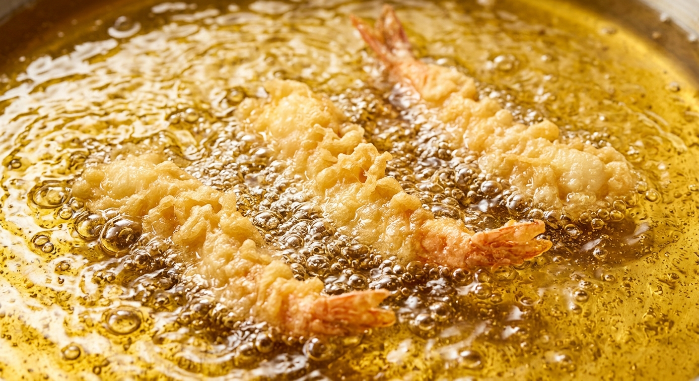

4MINI BIKE MEETING in カホテラス
カホテラスで開催される4ミニバイクのミーティング。詳しい内容はこちらから確認できます。
2026年9月25日（金）は「第102回 飯塚花火大会」！遠賀川中之島から打ち上がる約6,000発の大花火と、地元の話題スポットをご紹介。
カホテラスで開催される4ミニバイクのミーティング。詳しい内容はこちらから確認できます。


1ページに数時間を費やし、食事からトイレケアまで徹底的にこだわり抜いた愛猫ブログ。※現在は更新休止中のため問い合わせ等は受け付けておりません。